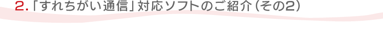
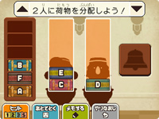
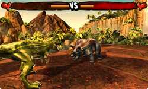
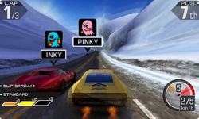
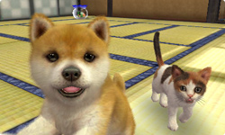
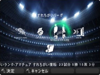
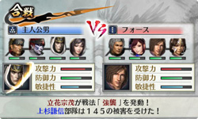
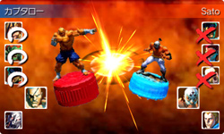

毎日さまざまなナゾトキが楽しめるナゾトキ・ファンタジーアドベンチャーゲーム『レイトン教授』シリーズの最新作です。
すれちがい通信を行うとプロフィールを交換することができ、解けた謎の数やプレイ時間など、相手のゲームの進行状況がわかります。また、ゲームコインを使って、自分のプロフィールを飾ることもできます。たくさんの謎を解いたプレイヤーと出会ったり、プロフィールで自慢するためにやりこんだりというのは、すれちがい通信ならではの面白さです。
© 2011 LEVEL-5 Inc.

ジュラ紀の地球を舞台に、恐竜たちが迫力のバトルをくり広げるアクションゲームです。暴君「アルコサウルス」を倒して平和な世界を取り戻すため、4頭の「ダイナキング」を作り出すことが目標です。プレイする恐竜はたくさんの種類の中から選ぶことができ、さらに恐竜の色や模様を自分の好みで変えることもできます。
すれちがい通信を行うと、ゲームやバトルを有利に進められるアイテムが手に入ります。3つのアイテムスロットをフル活用して、恐竜たちを大活躍させましょう。
© 2011 Ubisoft Entertainment. All Rights Reserved. Ubisoft, and the Ubisoft logo are trademarks of Ubisoft Entertainment in the U.S. and/or other countries.

ハイスピードでのドリフト走行が爽快なレースゲーム『リッジレーサー3D』では、すれちがい通信でゴースト（ユーザーのプレイデータ）や最速のコースレコードを交換することができます。
また、シングルプレイの「すれちがいデュエル」モードでは、このゴーストと1対1での対戦も可能なので、思いがけない天才ドライバーのゴーストとの出会いと対決も楽しめます。ちなみに、すれちがい通信をすると、新しい車やアイテムを入手するためのポイントがたまるのも見逃せないお得ポイントです。
© 2011 NAMCO BANDAI Games Inc.

おなじみ『nintendogs』の新作は、3D映像になったのはもちろん、ネコも飼えるようになりました。前作にあたるDSソフト『nintendogs』でも楽しめた「すれちがい通信」は、もちろん本作にもしっかり入っています。
今作のすれちがい通信では、メッセージに3D写真とプレゼントをつけることができます。また、すれちがった飼い主さん・子犬が大会にライバルとして出場したり、散歩をしたり、一緒に公園で遊んだり……。楽しい出会いが盛りだくさんです。
© 2011 Nintendo

リアルな臨場感あふれるサッカーゲーム『ウイニングイレブン』の新作です。さまざまなカメラ視点やアングルから楽しめたり、実際の試合さながらの実況中継はもちろん、自分だけのクラブチームを作れる「マスターリーグ」モードも搭載しています。
このモードでは、ほかのプレイヤーが作成したクラブと、すれちがい通信を使った自動対戦が可能です。対戦をくり返すと新しい選手やチームを使えるようになったり、勝率が上がると「すれちがいランク」も変化するようになっています。
© 2009 JFA Official Licensed Product of UEFA CHAMPIONS LEAGUE™. All names, logos and trophies of UEFA are the property, registered trademarks and/or logos of UEFA and are used herein with the permission of UEFA. No reproduction is allowed without the prior written approval of UEFA. adidas, the 3-Bars logo, the 3-Stripe trade mark and Predator are registered trademarks of the adidas Group, used with permission. adiPURE, adiZERO and F50 are trademarks of the adidas Group, used with permission. the use of real player names and likenesses is authorised by FIFPro and its member associations. Officially licensed by Asociación del Fútbol Argentino Officially licensed by Czech National Football Association Officially licensed by CFF © 2010, DFB Licence granted by m4e AG, Grünwald © The Football Association Ltd 2010.The FA Crest and FA England Crest are official trademarks of The Football Association Limited and are the subject of extensive trade mark registrations worldwide. © Football Federation Australia Limited 2010 copyright FFF Officially licensed by FIGC and AIC All copyrights and trademarks are KNVB respectively Team Holland property and are used under license. © 2001 Korea Football Association Licensed by OLIVEDESPORTOS (Official Agent of the FPF) Producto oficial licenciado RFEF © 2002 Ligue de Football Professionnel ® Officially Licensed by Eredivisie Media & Marketing C.V. Official Licensed Product of A.C. Milan Manchester United crest and imagery © MU Ltd © Real Madrid (10) Official product manufactured and distributed by Konami Digital Entertainment under licence granted by Soccer s.a.s. di Brand Management S.r.l. Under licence from Tottenham Hotspur Plc Wembley, Wembley Stadium and the Arch device are official trademarks of Wembley National Stadium Limited and are subject to extensive trade mark registrations. All other copyrights or trademarks are the property of their respective owners and are used under license. © Konami Digital Entertainment

プレイヤーが戦国武将となって、たくさんの敵を一気になぎ倒す爽快感を味わえるアクションゲーム『戦国無双』シリーズの最新作です。最大4人の武将を切り替え操作する、3DSならではの新システムを搭載。
すれちがい通信を利用して、ほかのプレイヤーが編成した武将軍団と合戦できるモードが搭載されています。たくさんの合戦を行うことでアイテムを入手できるほか、すれちがった相手を戦友として登録し、戦歴を競ったり、お互いのメッセージを確認したり、武器を交換したりといった、さまざまな楽しみ方ができます。
© 2011 コーエーテクモゲームス All rights reserved.

ニンテンドー3DSの立体視機能を活用した「3Dバーサス」モードも搭載した、大人気対戦格闘ゲームシリーズの最新作です。充実した通信機能をフル活用した通信対戦に加え、すれちがい通信でシミュレーションバトルを楽しめる「フィギュアコレクション」モードが新登場しています。
まずフィギュアスロットでキャラクターのフィギュアを集め、その中から5体を選んでチームを編成すると、すれちがった相手チームとのバトルが行われます。バトル終了後に手に入るフィギュアポイントで、コレクションをさらに充実させることが可能です。
© CAPCOM U.S.A., INC. 2011 ALL RIGHTS RESERVED.